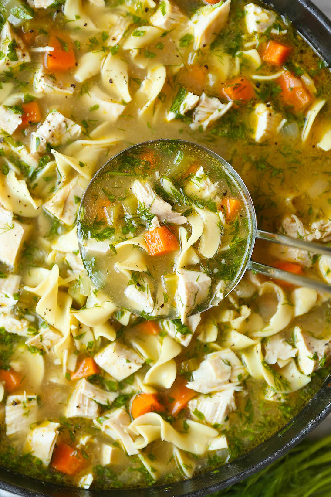

Chicken Noodle Soup

It's officially Chicken Noodle Soup Season!
With Fall now in full swing, what better way to enjoy the cooler weather than with a hot bowl of Chicken Noodle Soup?
Even better, a homemade bowl using ingredients you can find around your kitchen.
Keep reading and share this recipe with your loved ones (or don't).
Ingredients
- 2 tablespoons: unsalted butter
- 1: onion
- 2: carrots, peeled and diced
- 2: celery ribs, diced
- 3: cloves garlic, minced
- 8 cups: chicken stock
- 2: bay leaves
- Kosher salt freshly ground black pepper, to taste
- 2 1/2 pounds: bone-in, skinless chicken breasts
- 2 1/2 cups: wide egg noodles
- 2 tablespoons: chopped fresh parsley leaves
- 2 tablespoons: chopped fresh dill
- 1 tablespoon: freshly squeezed lemon juice, or more, to taste
Steps
- Melt butter in a large stockpot or Dutch oven over medium heat. Add onion, carrots and celery. Cook, stirring occasionally, until tender, about 3-4 minutes. Stir in garlic until fragrant, about 1 minute.
- Stir in chicken stock and bay leaves; season with salt and pepper, to taste. Add chicken and bring to boil; reduce heat and simmer, covered, until the chicken is cooked through, about 30-40 minutes. Remove chicken and let cool before dicing into bite-size pieces, discarding bones.
- Stir in chicken and pasta and cook until tender, about 6-7 minutes.
- Remove from heat; stir in parsley, dill and lemon juice; season with salt and pepper, to taste.
- Serve immediately.
This recipe was courtesy of...Damn Delicious
Back to top
Back to home